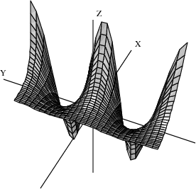
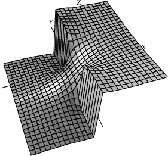
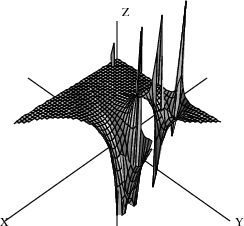
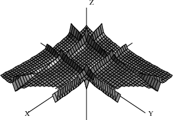
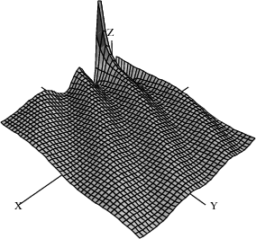
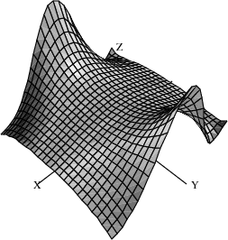

8.1 Numeric Functions
FriCAS provides two basic floating-point types: Float and DoubleFloat. This section describes how to use numerical function:numeric operations defined on these types and the related complex types. numeric operations
As we mentioned in Chapter ugIntro , the Float type is a software implementation of floating-point numbers in which the exponent and the floating-point number significand may have any number of digits. number:floating-point See FloatXmpPage for detailed information about this domain. The DoubleFloat (see DoubleFloatXmpPage ) is usually a hardware implementation of floating point numbers, corresponding to machine double precision. The types Complex Float and Complex DoubleFloat are floating-point number:complex the corresponding software implementations of complex floating-point numbers. complex:floating-point number In this section the term floating-point type means any of these number:complex floating-point four types.
The floating-point types implement the basic elementary functions. These include (where $ means DoubleFloat, Float, Complex DoubleFloat, or Complex Float):
exp, log: $ -> $
sin, cos, tan, cot, sec, csc: $ -> $
asin, acos, atan, acot, asec, acsc: $ -> $
sinh, cosh, tanh, coth, sech, csch: $ -> $
asinh, acosh, atanh, acoth, asech, acsch: $ -> $
pi: () -> $
sqrt: $ -> $
nthRoot: ($, Integer) -> $
^^Float: ($, Fraction Integer) -> $
^^Float: ($,$) -> $
The handling of roots depends on whether the floating-point type root:numeric approximation is real or complex: for the real floating-point types, DoubleFloat and Float, if a real root exists the one with the same sign as the radicand is returned; for the complex floating-point types, the principal value is returned. principal value Also, for real floating-point types the inverse functions produce errors if the results are not real. This includes cases such as
asin(1.2),
log(-3.2),
sqrt(-1.1).
The default floating-point type is Float so to evaluate functions using Float or Complex Float, just use normal decimal notation.
Type: Float
| -4.6792348860969899118-21.699165928071731864i |
Type: Complex Float
To evaluate functions using DoubleFloat or Complex DoubleFloat, a declaration or conversion is required.
r: DFLOAT := 3.1; t: DFLOAT := 4.5; exp(r + t*%i)
| -4.6792348860969906-21.699165928071732i |
Type: Complex DoubleFloat
exp(3.1::DFLOAT + 4.5::DFLOAT * %i)
| -4.6792348860969906-21.699165928071732i |
Type: Complex DoubleFloat
A number of special functions are provided by the package DoubleFloatSpecialFunctions for the machine-precision special functions floating-point types. DoubleFloatSpecialFunctions The special functions provided are listed below, where
F stands for the types DoubleFloat and Complex DoubleFloat. The real versions of the functions yield an error if the result is not real. function:special
Gamma:
F->F
Γ(z) is the Euler gamma function, function:Gamma
Γ(z), defined by Euler:gamma function
Γ(z)=∫0∞tz-1e-tdt.
Beta:
F->F
Beta(u,v) is the Euler Beta function, function:Euler Beta
B(u,v), defined by Euler:Beta function
B(u,v)=∫01tu-1(1-t)v-1dt. This is related to
Γ(z) by
B(u,v)=Γ(u)Γ(v)Γ(u+v).
logGamma:
F->F
logGamma(z) is the natural logarithm of
Γ(z). This can often be computed even if
Γ(z) cannot.
digamma:
F->F
digamma(z), also called
psi(z),
psi @
is the function
function:digamma defined by
ψ(z)=Γ′(z)Γ(z)
polygamma:
(NonNegativeInteger,F)->F
polygamma(n,z) is the
n-th derivative of function:polygamma
ψ(z), written
ψ(n)(z).
besselJ:
(F,F)->F
besselJ(v,z) is the Bessel function of the first kind, function:Bessel
Jμ(z). This function satisfies the differential equation
z2w′′(z)+zw′(z)+(z2-μ2)w(z)=0.
besselY:
(F,F)->F
besselY(v,z) is the Bessel function of the second kind, function:Bessel
Yμ(z). This function satisfies the same differential equation as besselJ. The implementation simply uses the relation
Yμ(z)=Jμ(z)cos(μπ)-J-μ(z)sin(μπ)Jμ(z)cos(μπ)-J-μ(z)sin(μπ).
besselI:
(F,F)->F
besselI(v,z) is the modified Bessel function of the first kind, function:Bessel
Iμ(z). This function satisfies the differential equation
z2w′′(z)+zw′(z)-(z2+μ2)w(z)=0.
besselK:
(F,F)->F
besselK(v,z) is the modified Bessel function of the second kind, function:Bessel
Kμ(z). This function satisfies the same differential equation as besselI. Bessel function The implementation simply uses the relation
Kμ(z)=πI-μ(z)-Iμ(z)2sin(μπ)I-μ(z)-Iμ(z)2sin(μπ).
airyAi:
F->F
airyAi(z) is the Airy function
Ai(z). function:Airy Ai This function satisfies the differential equation
w′′(z)-zw(z)=0. The implementation simply uses the relation
Ai(-z)=1313z(J-1/3(2323z3/2)+J1/3(2323z3/2)).
airyBi:
F->F
airyBi(z) is the Airy function
Bi(z). function:Airy Bi This function satisfies the same differential equation as airyAi. Airy function The implementation simply uses the relation
Bi(-z)=13133z(J-1/3(2323z3/2)-J1/3(2323z3/2)).
hypergeometric0F1:
(F,F)->F
hypergeometric0F1(c,z) is the hypergeometric function function:hypergeometric
F10(;c;z).
The above special functions are defined only for small floating-point types. If you give Float arguments, they are converted to DoubleFloat by FriCAS.
Type: DoubleFloat
a := 2.1; b := 1.1; besselI(a + %i*b, b*a + 1)
| 2.489481690673867-2.365846713181643i |
Type: Complex DoubleFloat
A number of additional operations may be used to compute numerical values. These are special polynomial functions that can be evaluated for values in any commutative ring
R, and in particular for values in any floating-point type. The following operations are provided by the package OrthogonalPolynomialFunctions: OrthogonalPolynomialFunctions
chebyshevT:
(NonNegativeInteger,R)->R
chebyshevT(n,z) is the
n-th Chebyshev polynomial of the first kind,
Tn(z). These are defined by
1-tz1-2tz+t2=∑n=0∞Tn(z)tn.
chebyshevU:
(NonNegativeInteger,R)->R
chebyshevU(n,z) is the
n-th Chebyshev polynomial of the second kind,
Un(z). These are defined by
11-2tz+t2=∑n=0∞Un(z)tn.
hermiteH:
(NonNegativeInteger,R)->R
hermiteH(n,z) is the
n-th Hermite polynomial,
Hn(z). These are defined by
e2tz-t2=∑n=0∞Hn(z)tnn!.
laguerreL:
(NonNegativeInteger,R)->R
laguerreL(n,z) is the
n-th Laguerre polynomial,
Ln(z). These are defined by
e-tz1-t1-t=∑n=0∞Ln(z)tnn!.
laguerreL:
(NonNegativeInteger,NonNegativeInteger,R)->R
laguerreL(m,n,z) is the associated Laguerre polynomial
Lnm(z). This is the
m-th derivative of
Ln(z).
legendreP:
(NonNegativeInteger,R)->R
legendreP(n,z) is the
n-th Legendre polynomial,
Pn(z). These are defined by
11-2tz+t2=∑n=0∞Pn(z)tn.
These operations require non-negative integers for the indices, but otherwise the argument can be given as desired.
[chebyshevT(i, z) for i in 0..5]
| [1,z,2z2-1,4z3-3z,8z4-8z2+1,16z5-20z3+5z] |
Type: List Polynomial Integer
The expression
chebyshevT(n,z) evaluates to the
n-th Chebyshev polynomial:Chebyshev:of the first kind polynomial of the first kind.
chebyshevT(3, 5.0 + 6.0*%i)
Type: Complex Float
chebyshevT(3, 5.0::DoubleFloat)
Type: DoubleFloat
The expression
chebyshevU(n,z) evaluates to the
n-th Chebyshev polynomial:Chebyshev:of the second kind polynomial of the second kind.
[chebyshevU(i, z) for i in 0..5]
| [1,2z,4z2-1,8z3-4z,16z4-12z2+1,32z5-32z3+6z] |
Type: List Polynomial Integer
Type: Float
The expression
hermiteH(n,z) evaluates to the
n-th Hermite polynomial:Hermite polynomial.
[hermiteH(i, z) for i in 0..5]
| [1,2z,4z2-2,8z3-12z,16z4-48z2+12,32z5-160z3+120z] |
Type: List Polynomial Integer
| -0.1448706729337934088E93 |
Type: Float
The expression
laguerreL(n,z) evaluates to the
n-th Laguerre polynomial:Laguerre polynomial.
[laguerreL(i, z) for i in 0..4]
| [1,-z+1,z2-4z+2,-z3+9z2-18z+6,z4-16z3+72z2-96z+24] |
Type: List Polynomial Integer
Type: Float
[laguerreL(j, 3, z) for j in 0..4]
| [-z3+9z2-18z+6,-3z2+18z-18,-6z+18,-6,0] |
Type: List Polynomial Integer
Type: Float
The expression polynomial:Legendre
legendreP(n,z) evaluates to the
n-th Legendre polynomial,
[legendreP(i,z) for i in 0..5]
| [1,z,32z2-12,52z3-32z,358z4-154z2+38,638z5-354z3+158z] |
Type: List Polynomial Fraction Integer
Type: Complex Float
Finally, three number-theoretic polynomial operations may be evaluated. number theory The following operations are provided by the package NumberTheoreticPolynomialFunctions. NumberTheoreticPolynomialFunctions.
bernoulliB:
(NonNegativeInteger,R)->R
bernoulliB(n,z) is the
n-th Bernoulli polynomial, polynomial:Bernoulli
Bn(z). These are defined by
teztet-1=∑n=0∞Bn(z)tnn!.
eulerE:
(NonNegativeInteger,R)->R
eulerE(n,z) is the
n-th Euler polynomial, Euler:polynomial
En(z). These are defined by polynomial:Euler
2eztet+1=∑n=0∞En(z)tnn!.
cyclotomic:
(NonNegativeInteger,R)->R
cyclotomic(n,z) is the
n-th cyclotomic polynomial
. This is the polynomial whose roots are precisely the primitive
n-th roots of unity. Euler:totient function This polynomial has degree given by the Euler totient function function:totient
.
The expression
bernoulliB(n,z) evaluates to the
n-th Bernoulli polynomial:Bernouilli polynomial.
Type: Polynomial Fraction Integer
bernoulliB(3, 0.7 + 0.4 * %i)
Type: Complex Float
The expression polynomial:Euler
eulerE(n,z) evaluates to the
n-th Euler polynomial.
Type: Polynomial Fraction Integer
eulerE(3, 0.7 + 0.4 * %i)
Type: Complex Float
The expression polynomial:cyclotomic
cyclotomic(n,z) evaluates to the
n-th cyclotomic polynomial. cyclotomic polynomial
Type: Polynomial Integer
cyclotomic(3, (-1.0 + 0.0 * %i)^(2/3))
Type: Complex Float
Drawing complex functions in FriCAS is presently somewhat awkward compared to drawing real functions. It is necessary to use the draw operations that operate on functions rather than expressions.
This is the complex exponential function (rotated interactively). function:complex exponential When this is displayed in color, the height is the value of the real part of the function and the color is the imaginary part. Red indicates large negative imaginary values, green indicates imaginary values near zero and blue/violet indicates large positive imaginary values.
draw((x,y)+-> real exp complex(x,y), -2..2, -2*%pi..2*%pi, colorFunction == (x, y) +-> imag exp complex(x,y), title=="exp(x+%i*y)", style=="smooth")

This is the complex arctangent function. function:complex arctangent Again, the height is the real part of the function value but here the color indicates the function value's phase. The position of the branch cuts are clearly visible and one can see that the function is real only for a real argument.
vp := draw((x,y) +-> real atan complex(x,y), -%pi..%pi, -%pi..%pi, colorFunction==(x,y) +->argument atan complex(x,y), title=="atan(x+%i*y)", style=="shade"); rotate(vp,-160,-45); vp

This is the complex Gamma function.
draw((x,y) +-> max(min(real Gamma complex(x,y),4),-4), -%pi..%pi, -%pi..%pi, style=="shade", colorFunction == (x,y) +-> argument Gamma complex(x,y), title == "Gamma(x+%i*y)", var1Steps == 50, var2Steps== 50)

This shows the real Beta function near the origin.
draw(Beta(x,y)/100, x=-1.6..1.7, y = -1.6..1.7, style=="shade", title=="Beta(x,y)", var1Steps==40, var2Steps==40)

This is the Bessel function
for index
in the range
-6..4 and argument
x in the range
2..14.
draw((alpha,x) +-> min(max(besselJ(alpha, x+8), -6), 6), -6..4, -6..6, title=="besselJ(alpha,x)", style=="shade", var1Steps==40, var2Steps==40)

This is the modified Bessel function
evaluated for various real values of the index
and fixed argument
x=5.
draw(besselI(alpha, 5), alpha = -12..12, unit==[5,20])
This is similar to the last example except the index
takes on complex values in a
6x6 rectangle centered on the origin.
draw((x,y) +-> real besselI(complex(x/20, y/20),5), -60..60, -60..60, colorFunction == (x,y)+-> argument besselI(complex(x/20,y/20),5), title=="besselI(x+i*y,5)", style=="shade")
